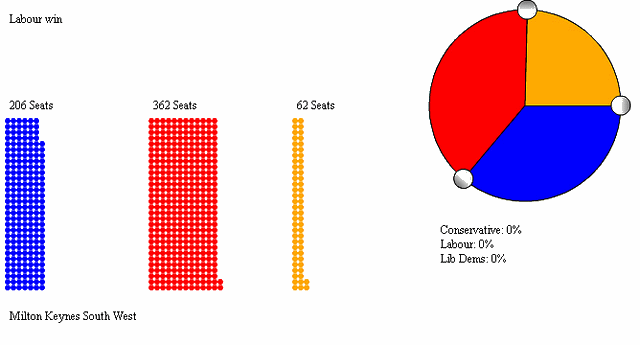

Tom Pearson
I'm a London based developer who works predominantly on the web. I've been doing this for about 15 years now.
My interest is in creating visual explanations, maps and visualising data. For the last 7 years or so I've been able to do these things, leading the technical direction of, a cross disciplinary team doing visual journalism for BBC News, one of the worlds most popular websites.
I enjoy working in close knit, cross disciplinary teams, prototyping, designing and creating products using Javascript, Python, Node JS, Actionscript and whatever else is needed to get the job done.
If you'd like to work with me then you're in luck as I'm available for hire, just drop me an email at tom.g.pearson@gmail.com.
Election 2010 Seat Calculator

Whilst working on the BBC News websites I developed results maps and other visualisations for a lot of elections.
In addition to results visualisations I also produced explanatory graphics for use during the campaign. My favourite of these is the parliamentary seat calculator.
I first prototyped the seat calculator straight after the 2005 general election an expression of my frustration with the limitations of the hoary old swingometer esp. its online incarnations. It was obvious that the interaction of the three main parties at the polls was increasingly important and I wanted to make tangible how that interaction could effect election results.
After 5 years of sitting in the prototypes folder on my hard drive I got the chance to dust it off and work out how to make the interface more intuitive for the 2010 election. It took a few goes to get right but with rapid prototyping and rigorous refinement based on watching a whole load of very patient people interact with those prototypes we produced an application of which I'm still really proud and which was well recieved by both casual users and experts.
UK Road Crash Data

Working closely with a journalist to analyse, process and clean police records of 11 years worth of road crash data we then produced a postcode searchable map of road deaths, a series of case studies and some spectacular visualisations of the complete data set.
For the main fatalities map we decided early on that we wanted to try to make the details of individual accidents more affecting than the raw data, we felt it was important that the personal tragedies represented by each point on the map weren't abstracted—people should be able to feel what each point means—but at the same time we didn't want to be emotionally manipulative or risk awkward uncanny valley-esq descriptions of horiffic events. To that end we experimented with the range of tones and composition techniques that it was possible to genrate from the data. In the end we came up with something which I think—whilst not perfect—strikes a good balance.
Whilst the project was well recieved some criticism was aimed at the high level visualisation of the whole data set along the lines of "Well it only really tels us what we already know; accidents happen on roads, more often where there are more people". Whilst this is true I think this kind of imagery can be useful as a way into the story, both as a kind of advertising image and as a way to illustrate sheer scale—over eleven years there's been an accident on pretty much every road in London and the whole countries road network can be traced out in collisions, I think that's worth showing.
What Is Poor?

This was a tiny project, taking no longer than two or three days from start to finish but I think it's a great example of the value of interactivity can bring to explanations of abstract ideas.
By taking a simplified chart of income distribution and allowing the user to adjust the plotted values I was able to make tangible and intelligable how the definition of poverty effects a population in practice.
For more on why I think this kind of thing is particularly valuable and useful you can read a brief (and only slightly ranty) blog post I wrote on the subject.
The Natural History Museum

Before my stretch at the BBC I worked at The Natural History Museum. I built gallery infomation systems for "Investigate"—the museums award winning education gallery.
My job included design, front end, back end and database developement, hardware specing, purchasing and instalation, staff training, system maintenance and repairs. Basically everything apart from writing about the specimens. Museums operate on a tight budget.
One of the most valuable bits of expeience I got from working at the museum is an appreciation for the value of seeing real people really using your software. It's an amazing and humbling experience to be able to deploy something to the public gallery and then 5 minutes later being able to watch people stuggle with what you thought was perfectly intuitive.
Sketches, Experiments and Personal Projects
My favourite part of making things for the web is learning new technologies and languages, prtotyping new ideas and trying out new software. Here are some interesting bits and pieces I've made, either in the course of my work or out of personal curiosity.
Oblique strategies
I wanted to learn about the new HTML5 local storage API so I created a virtual Oblique Strategies deck that works offline and will remember which cards you've already seen between visits.
Day/ Night Terminator
This HTML5 canvas based interactive was built as a quick sketch for part of an interactive graphic examining the transit of Venus. It shows what areas of the earth are in shadow and which are in the sun at a given (adjustable) time and date. It's quite fun to watch the terminator (the line that separates night from day on the earth surface) flex and distort illustrating accidentally the effect that projection has on a straight line drawn on the earths surface.
Deaths of the Iliad
Ever wanted to read, in order, every death in Homers epic poem The Iliad? Well now you can! Or perhaps you're just interested in those deaths which involve nipples—no problem.
Reading The Iliad I was struck by how brutal and gory the battle scenes were. So I decided to transcribe them all and put them on a tumblr. I didn't realise when I started there would be quite so many.